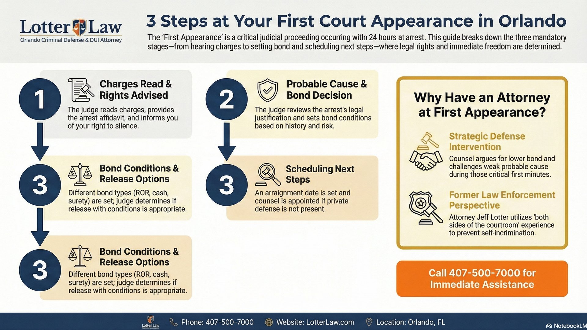

Your First Court Appearance in Orlando: What to Expect

You've been arrested in Orlando. You're sitting in a holding cell, and someone tells you that you'll see a judge "in the morning." Your mind is racing: What happens next? Will I get out? How much is bond? As a former State Trooper who transported countless people to that exact moment, I can walk you through exactly what to expect at your first court appearance in Florida.
The 24-Hour Rule: When You'll See a Judge
Under Florida law, every arrested person must be brought before a judge within 24 hours of arrest. This isn't optional. Florida Rule of Criminal Procedure 3.130 requires that a first appearance hearing happen either in person or via video link within that window.
In Orange County, first appearance hearings are held every day, including weekends and holidays. They typically take place in the morning. If you're arrested on a Friday night, you'll see a judge Saturday morning. The hearing itself is usually brief, often lasting only a few minutes per person, but those few minutes determine whether you go home or stay in jail.
What Happens in Those Few Minutes
First appearance is fast. The judge has a full docket of people who were arrested in the last 24 hours. Each case gets a few minutes. That's why preparation matters: what you say (or don't say) and whether you have an attorney present can shape your entire case from this point forward.
What the Judge Does at First Appearance
The judge has several responsibilities at first appearance, and they happen quickly:
- Informs you of the charges: The judge reads the charges against you and provides a copy of the complaint or arrest affidavit
- Advises you of your rights: Right to remain silent, right to an attorney, and the right to communicate with family or counsel
- Determines probable cause: The judge reviews whether the arrest was legally justified based on the facts in the arrest report
- Sets bond or conditions of release: This is the decision that determines whether you go home today or stay in jail
- Appoints a public defender: If you can't afford an attorney, the judge will determine eligibility and appoint one
How Bond Is Determined
Bond is the part everyone cares about most: how much does it cost to get out? Under F.S. 903.046, the judge considers several factors when setting bond:
Bond Determination Factors
- Seriousness of the charges: A misdemeanor DUI gets lower bond than an aggravated battery
- Criminal history: Prior convictions or pending cases increase bond amounts
- Flight risk: Have you missed court dates before? Do you have out-of-state ties?
- Community ties: How long you've lived in the area, employment status, family connections
- Public safety risk: Is there a risk of danger to a victim or the community?
For many misdemeanor charges in Orange County, there's a standard bond schedule. A first-time DUI might carry a preset bond of $500-$1,000. But for felonies or cases involving violence, the judge has wide discretion to set bond higher, impose conditions like GPS monitoring or no-contact orders, or in some cases deny bond altogether.
Dangerous Crimes: Bond May Be Denied
Under F.S. 907.041, people arrested for designated "dangerous crimes" may not be granted nonmonetary pretrial release at first appearance. These cases require a separate pretrial detention hearing. This includes charges like armed robbery, sexual battery, and certain drug trafficking offenses. If you're facing a dangerous crime charge, having an attorney at first appearance is critical.
Your Rights at First Appearance
You have important constitutional rights at first appearance. Know them before you walk in:
- Right to remain silent: You do not have to answer questions about the charges. Anything you say can be used against you. Exercise this right.
- Right to an attorney: You can have a private attorney present, or the court will appoint a public defender if you qualify
- Right to know the charges: The judge must tell you exactly what you're charged with
- Right to communicate: You have the right to contact family, friends, or your attorney
The Biggest Mistake People Make
The most common mistake at first appearance is talking too much. People want to explain their side, tell the judge "what really happened," or argue that the charges are wrong. This is not the time. Anything you say is on the record and can be used by prosecutors later. Let your attorney speak for you. If you don't have one yet, say as little as possible beyond confirming your identity.
Do You Actually Need to Go to First Appearance?
Here's what most people don't realize: the majority of people arrested in Orlando never go to first appearance. If your charges carry a standard bond amount, you (or your family) can post bond at the jail and get released before the hearing ever happens. Once you bond out, first appearance is cancelled for your case.
So who actually goes to first appearance? People who couldn't bond out — either because:
- No bond was set: Certain serious charges don't have a standard bond schedule, so you must wait for a judge to set one
- Bond is too high: The preset bond exceeds what you or your family can afford
- Hold from another jurisdiction: A warrant or detainer from another county or state prevents release
- Dangerous crime designation: Under F.S. 907.041, certain charges restrict pretrial release
When First Appearance Really Matters
If you or a family member is being held with no bond, first appearance is your first real opportunity to get in front of a judge and argue for release. This is when having an attorney present makes the biggest difference. The public defender's office handles these hearings daily and does a good job, but if you have a private attorney who already knows the details of your case, they can present specific facts about your ties to the community, employment, and circumstances that support release.
Questions About Your First Appearance?
If you or a family member has been arrested in Orlando and you want to understand your options before first appearance, we're happy to answer questions.
Contact Lotter Law at 407-500-7000 for a free consultation.

Jeff Lotter
Criminal Defense Attorney | Former State Trooper
Jeff Lotter is an Orlando criminal defense attorney and former Florida Highway Patrol trooper. He uses his law enforcement background to build stronger defenses for clients facing criminal charges in Central Florida.
Related Articles
Understanding Probable Cause in Florida
What probable cause means, how officers establish it, and how your attorney can challenge it at first appearance.
Pre-Trial Motions: What Happens After First Appearance
After your first court appearance, the next critical phase involves motions that can shape or dismiss your case.
Your Rights During a Traffic Stop in Florida
Know your constitutional rights from the moment you see those lights in your mirror.
Do You Have to Tell Your Employer About an Arrest?
After your first appearance, this is one of the most common questions. Here's what Florida law says.